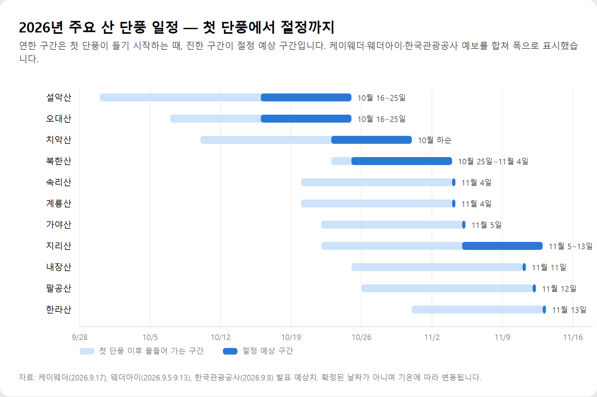
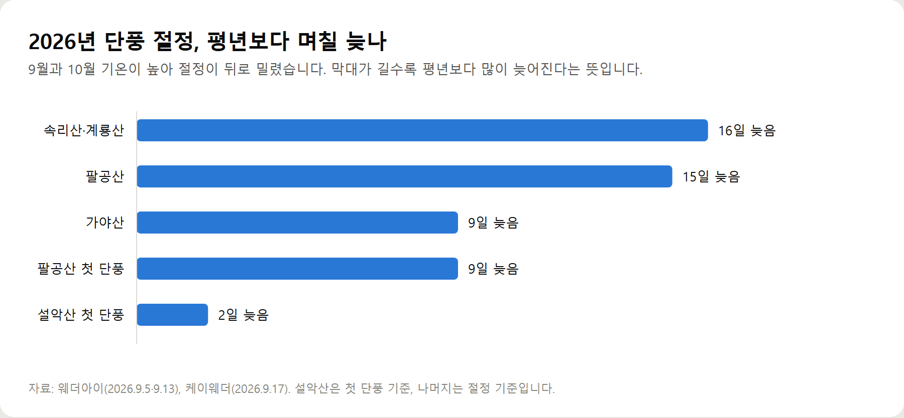

<meta charset="utf-8">
<title>2026 단풍시기 총정리 — 나의 투자 그리고 행복한 여행</title>
<meta name="description" content="2026 단풍시기를 예보기관별로 비교해 정리했습니다. 첫 단풍은 9월 말 설악산에서 시작되고 단풍 절정은 중부 10월 하순, 남부 11월 초순으로 예상됩니다. 전국 단풍 명소와 교통·주차·비용까지 확인하세요.">
<meta name="viewport" content="width=device-width, initial-scale=1">
<link rel="canonical" href="https://worldtraveler1.tistory.com/100">
<link rel="preconnect" href="https://fonts.googleapis.com">
<link rel="preconnect" href="https://fonts.gstatic.com" crossorigin>
<link rel="stylesheet" href="https://fonts.googleapis.com/css2?family=Hahmlet:wght@400;600;800&family=IBM+Plex+Mono:wght@400;500&family=IBM+Plex+Sans+KR:wght@300;400;500;600&display=swap">

<style>
  :root{
    --paper:#F2EEE6;--surface:#FAF8F3;--surface-2:#E7E1D5;
    --ink:#191510;--ink-2:#4A4235;--ink-3:#7D7364;
    --line:#D6CEBF;--line-soft:#E4DDD0;--accent:#B06A15;--accent-bright:#C2761A;
    --up:#E5484D;--down:#3B82F6;
    --f-display:"Hahmlet",'Nanum Myeongjo',"Apple SD Gothic Neo",serif;
    --f-body:"IBM Plex Sans KR","Apple SD Gothic Neo","Malgun Gothic",sans-serif;
    --f-mono:"IBM Plex Mono","SFMono-Regular",Consolas,monospace;
    --pad:clamp(20px,5vw,64px);
  }
  @media (prefers-color-scheme:dark){
    :root:not([data-theme="light"]){
      --paper:#0B1120;--surface:#121A2C;--surface-2:#1A2439;
      --ink:#E9EEF7;--ink-2:#A9B5C9;--ink-3:#72809A;
      --line:#26314A;--line-soft:#1D2739;--accent:#E8A33D;--accent-bright:#F0B45C;
    }
  }
  *{box-sizing:border-box;}
  body{margin:0;background:var(--paper);color:var(--ink);font-family:var(--f-body);
    font-weight:300;font-size:1rem;line-height:1.75;-webkit-font-smoothing:antialiased;}
  a{color:inherit;}
  img{max-width:100%;height:auto;}
  .wrap{max-width:760px;margin:0 auto;padding-inline:var(--pad);}
  .nav{position:sticky;top:0;z-index:20;background:color-mix(in srgb,var(--paper) 88%,transparent);
    backdrop-filter:saturate(180%) blur(12px);border-bottom:1px solid var(--line);}
  .nav-in{display:flex;align-items:center;justify-content:space-between;height:58px;}
  .brand{font-family:var(--f-display);font-weight:600;font-size:1rem;letter-spacing:-.02em;text-decoration:none;}
  .back{font-family:var(--f-mono);font-size:.72rem;color:var(--ink-3);text-decoration:none;}
  .article{padding-block:clamp(40px,7vw,72px) clamp(56px,9vw,96px);}
  .eyebrow{font-family:var(--f-mono);font-size:.68rem;letter-spacing:.16em;text-transform:uppercase;
    color:var(--accent);margin:0 0 14px;}
  h1{font-family:var(--f-display);font-weight:800;font-size:clamp(1.6rem,4.4vw,2.3rem);
    line-height:1.3;letter-spacing:-.03em;margin:0 0 16px;}
  .byline{font-family:var(--f-mono);font-size:.72rem;color:var(--ink-3);
    padding-bottom:24px;border-bottom:1px solid var(--line);margin-bottom:32px;}
  h2{font-family:var(--f-display);font-weight:600;font-size:1.25rem;letter-spacing:-.02em;margin:42px 0 14px;}
  h3{font-family:var(--f-display);font-weight:600;font-size:1.05rem;letter-spacing:-.02em;
    margin:30px 0 10px;padding-top:14px;border-top:1px solid var(--line-soft);}
  h3 .code{font-family:var(--f-mono);font-size:.7rem;font-weight:400;color:var(--ink-3);margin-left:6px;}
  p{margin:0 0 18px;color:var(--ink-2);}
  ul.checks{margin:0 0 18px;padding-left:20px;color:var(--ink-2);}
  ul.checks li{margin-bottom:8px;font-size:.94rem;}
  table{width:100%;border-collapse:collapse;font-size:.88rem;margin-bottom:8px;}
  th{font-family:var(--f-mono);font-size:.66rem;letter-spacing:.06em;text-transform:uppercase;
    color:var(--ink-3);text-align:right;padding:8px 6px;border-bottom:1px solid var(--line);}
  th:first-child{text-align:left;}
  td{padding:10px 6px;border-bottom:1px solid var(--line-soft);color:var(--ink-2);}
  td.num{font-family:var(--f-mono);text-align:right;font-variant-numeric:tabular-nums;}
  td.up{color:var(--up);} td.down{color:var(--down);}
  .scroll{overflow-x:auto;}
  figure{margin:22px 0;}
  figure img{display:block;border-radius:3px;background:var(--surface-2);}
  figcaption{margin-top:8px;font-family:var(--f-mono);font-size:.68rem;color:var(--ink-3);text-align:center;}
  .note{margin-top:34px;padding:16px 18px;border-left:3px solid var(--accent);
    background:var(--surface);border-radius:0 3px 3px 0;}
  .note p{margin:0;font-size:.85rem;color:var(--ink-3);}
  .foot{border-top:1px solid var(--line);background:var(--surface);padding-block:30px 38px;}
  .foot p{margin:0;font-size:.8rem;color:var(--ink-3);}
</style>

<nav class="nav">
  <div class="wrap nav-in">
    <a class="brand" href="../index.html">나의 투자 그리고 행복한 여행</a>
    <a class="back" href="../index.html#stocks">← 시황으로</a>
  </div>
</nav>

<main class="wrap article">
  <p class="eyebrow">Market</p>
  <h1>2026 단풍시기 — 첫 단풍 9월 30일, 절정은 평년보다 최대 16일 늦게</h1>
  <p class="byline">여행 · 2026-09-21 기준</p>

  <p>한 줄 요약: 2026년 첫 단풍은 9월 30일~10월 3일 설악산에서 시작되고, 절정은 중부 10월 하순·남부 11월 초중순으로 평년보다 최대 16일 늦습니다.</p>
  <p>2026년 9월 21일에 케이웨더·웨더아이·한국관광공사 예보와 공공기관 요금 자료로 정리한 기록입니다.</p>
  <h2>숫자로 보는 2026 단풍시기</h2>
  <ul class="checks">
    <li>첫 단풍 — 설악산 9월 30일~10월 3일 (예보기관별 차이)</li>
    <li>절정 — 중부 10월 19일~11월 5일, 남부 11월 1~13일</li>
    <li>가장 늦은 곳 — 한라산 11월 13일</li>
    <li>평년 대비 — 팔공산 15일, 속리산·계룡산 약 16일 지연</li>
    <li>남하 속도 — 하루 20~25km</li>
  </ul>
  <p>올해 예보가 늦어진 배경은 기온입니다. 최근 5년 9월 전국 평균기온은 1990년대보다 2.3도, 10월은 1.4도 높았습니다.</p>
  <figure><figcaption>2026년 주요 산 첫 단풍·절정 예상 구간 (단위: 날짜, 예보기관별 예상치)</figcaption></figure>
  <figure><figcaption>평년 대비 절정 지연 일수 — 2026년 예보 기준 (단위: 일)</figcaption></figure>
  <p>예보기관마다 날짜가 다릅니다. 설악산 첫 단풍은 케이웨더가 9월 30일, 웨더아이와 한국관광공사가 10월 3일로 봤습니다. 북한산 절정은 서울시 안내가 10월 25일경, 한국관광공사가 11월 4일입니다.</p>
  <p>그래서 실전에서는 예보된 절정일 앞뒤 5일을 여유 구간으로 두고 그 안에서 평일을 고릅니다. 날짜를 못 맞췄다면 시기 대신 갈 곳의 높이를 바꾸면 됩니다. 이르면 정상 쪽, 늦으면 계곡과 산 아래 사찰 쪽입니다.</p>
  <p>지역별 절정 예상일과 서울 명소 10곳·근교 10곳·전국 20곳의 교통·주차·비용 정리, 사진 시간대와 혼잡 회피 방법은 원문에 있습니다.</p>
  <h2>출처</h2>
  <ul class="checks">
    <li>케이웨더 2026년 단풍 예상 시기(2026년 9월 17일 발표) — 중부·남부 첫 단풍과 절정 구간, 설악산 첫 단풍 9월 30일</li>
    <li>웨더아이 2026년 단풍 예보(2026년 9월 5일·9월 13일 발표) — 산별 첫 단풍·절정 예상일과 평년 대비 지연 일수</li>
    <li>한국관광공사 2026년 가을 단풍 예상(2026년 9월 8일) — 설악산·북한산·지리산·내장산·한라산 절정 예상일</li>
    <li>서울특별시 「울긋불긋 도심 속에서 느끼는 서울 단풍길 110선」 — 110개 구간 167km, 북한산 절정기 10월 25일경</li>
    <li>국가유산청·대한불교조계종 — 2023년 5월 4일부터 전국 65개 사찰 문화유산 관람료 면제</li>
    <li>국가유산청 궁능유적본부 관람요금 안내 — 경복궁·창덕궁·창경궁·덕수궁·종묘 관람료와 무료 대상</li>
    <li>화담숲 공식 홈페이지 — 2026 가을 성수기 관람 기간과 입장료·운영시간</li>
    <li>정읍시 내장산 단풍철 주차·셔틀버스 안내</li>
  </ul>
  <div class="note"><p>이 글의 단풍 날짜는 2026년 9월 21일까지 발표된 민간 기상업체와 한국관광공사의 예상치입니다. 확정된 날짜가 아니며 9·10월 기온과 일교차, 강수에 따라 앞뒤로 움직입니다. 요금과 운영시간도 2026년 9월 기준이라 시즌 중에 바뀔 수 있으니 출발 전 각 기관 공식 홈페이지에서 다시 확인하시기 바랍니다.</p></div>
</main>

<footer class="foot">
  <div class="wrap"><p>나의 투자 그리고 행복한 여행 · 투자 판단의 참고 자료일 뿐, 매수·매도를 권유하지 않습니다.</p></div>
</footer>
